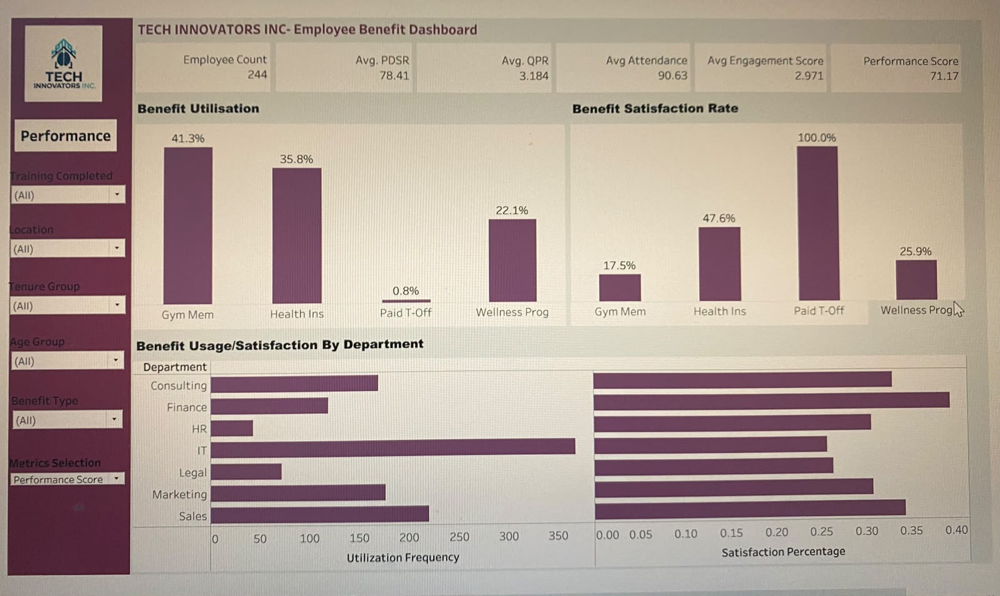
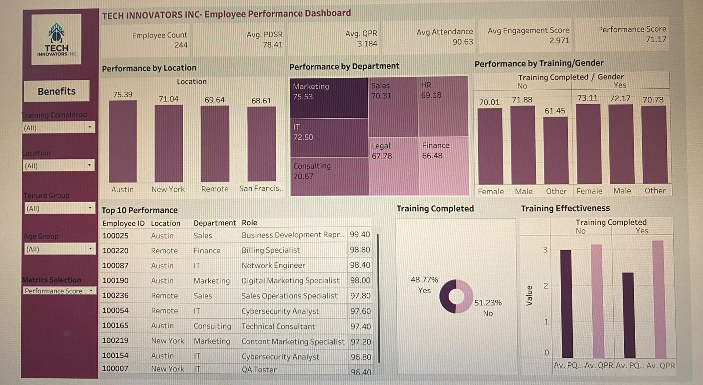

📌 Project Overview
Tech Innovators Inc. is a rapidly growing technology consulting firm with over 200 employees. As the company scales,
HR faces challenges in performance visibility, talent development, and benefits optimization. This project uses Tableau
to build an HR analytics solution that provides real-time insights into employee performance, engagement, and benefits usage.

Employee Performance Dashboard
- Employee Count: 244
- Average Performance Score: 71.17
- Average Attendance: 90.63%
- Top-performing location: Austin
- Top-performing departments: Marketing, IT, Consulting
- Training completion improves quarterly performance
🎯 Employee Benefits Dashboard

Employee Benefits Dashboard
- Gym Membership: Highest usage, lowest satisfaction
- Health Insurance: High usage, moderate satisfaction
- Paid Time Off: Lowest usage, highest satisfaction
- Wellness Program: Average usage and satisfaction
💡 Key Insights
- Location and department strongly influence performance outcomes.
- Training significantly improves quarterly performance.
- Nearly half of employees have not completed training.
- Benefit usage does not always correlate with satisfaction.
- Paid Time Off is underutilized despite high satisfaction.
🚀 Strategic Recommendations
- Replicate successful practices from high-performing locations and departments.
- Make training mandatory to improve overall performance.
- Strengthen Gym Membership and Health Insurance programs.
- Promote Paid Time Off to increase adoption.
- Adopt department-specific benefits strategies.
🔄 Project Workflow
- Data Collection (Google Sheets)
- Data Cleaning & Preparation
- Exploratory Data Analysis
- Dashboard Development (Tableau)
- Testing & Publishing
- Executive Reporting
- Google Sheets
- Tableau
- Excel